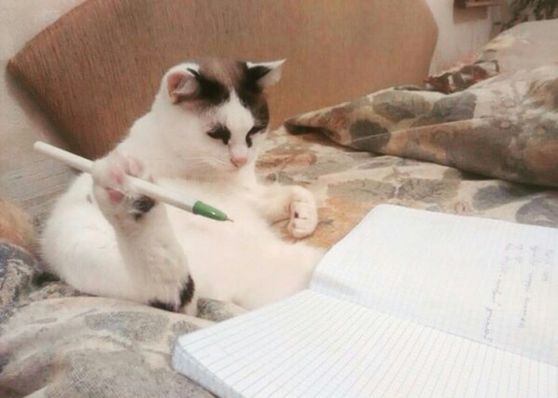

Коты захватят планету!
Достоверно известно, что коты собираются захватить землю!
Они строят свои маленькие коварные пушистые планы и вот-вот готовы начать восстание.
Они собирают сторонников!
Коты стараются договориться со всеми животными, чтобы план по захвату мира реализовался максимально просто.
Обращайте внимание на такие собрания, это один из тревожных звоночков.

Они слишком милые чтобы мы начали их подозревать!
У котов очаровательные мордочки, милейшие лапки и хвостики, но это обман! Не доверяйте пушистым, несмотря ни на что!
Под маской самых милых существ скрываются захватчики.
Если мы проиграем в этой битве, то скоро мы будем ходить в лоток и есть из миски!
Список отвлекающих приемов котов-захватчиков:
- Мурлыкание
- Розовые носики
- Мягкие лапки
- Пухлые животики
- Очаровательные глазки
Как обезопасить себя:
- Ни при каких обстоятельствах не смотрите кошке в глаза. Она прочитает ваши мысли и будет использовать их против вас!
- Даже не вздумайте гладить кота, т.к. после этого вы будете находиться в пожизненном рабстве у пушистого тирана!
- Никогда не играйте с котами при помощи лазерной указки. Коты очень злопямятные и в будущем они не упустят шанс расквитаться с вами за годы унижений!
Секретные фото с мест сбора бунтовщиков:
Как они готовят свои планы
|
|
 |
|
|
|
|
|
|
 |